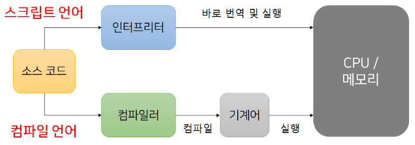

컴파일러(Compiler)와 인터프리터(Interpreter)¶
1절. 정의
2절. 컴파일러
3절. 인터프리터
4절. 차이점
5절. 정리
1절. 정의¶
어셈블리 언어(Assembly Language)¶
- 기계어와 일대일 대응이 되는 언어
- 컴퓨터 프로그래밍의 저급 언어
- 컴퓨터 구조에 따라 사용하는 기계어가 상이
- 기계어에 대응되어 만들어지는 어셈블리 언어 또한 상이
컴파일(Compile)¶
- 번역하는 과정
- 컴퓨터가 고급 언어로 작성한 코드를 인식하지 못하기 때문
고급 프로그래밍 언어 발생 배경¶
- 통일된 언어 체계 코드의 필요성 증가
- 컴퓨터 구조 발전
- 새로운 아키텍처가 적용된 CPU 생성
- 같은 프로그램을 새 CPU에 맞는 어셈블리 언어로 재작성 필요
2절. 컴파일러¶
정의¶
- "무언가를 모아서 묶음으로 만든다"
- 프로그램 전체를 스캔하여 모두 기계어로 한 번에 번역
컴파일러형 언어(Compiled Language)¶
- C
- C++
- C#
- CLEO
- COBOL
- Java
해석 과정¶
1. 소스 코드 읽기¶
- 파일 내 소스 코드 Read
2. 어휘 분석¶
- 소스 코드를 토큰(Token)이라는 작은 요소로 분해
- 컴파일러는 주석, 공백, 탭 문자 등을 제거
- 키워드, 연산자, 식별자, 리터럴 등의 토큰으로 분류
3. 구문 분석¶
- 토큰들 구조화
- 추상 구문 트리 생성
- 문법에 따라 토큰 조합
- 프로그램 구조를 나타내는 트리 형태 데이터 구조 생성
4. 의미 분석¶
- 추상 구문 트리 검사 후 프로그램의 의미 검증
- 타입 검사 변수 정의 및 사용 검사
- 함수 호출의 유효성 검사
- 오류 발견 시 컴파일러는 에러 메시지 생성 후 컴파일 중단
5. 중간 코드 생성¶
- 의미 분석 완료 시 추상 구문 트리를 중간 표현으로 변환
- 중간 코드는 소스 코드와 기계어 사이에 있는 중간 단계
- 컴파일러에 의해 추가적인 최적화 수행
6. 최적화¶
- 중간 코드에 대한 다양한 최적화 기법 적용 후 프로그램의 실행 효율 향상
- 불필요한 코드 제거, 상수 폴딩, 루프 최적화 등의 작업 수행
7. 기계어 생성¶
- 최적화된 중간 코드를 기계어(바이너리 코드)로 변환
- 기계어 명령어 생성 후 메모리 할당, 레지스터 할당 등과 같은 저수준 작업 수행
8. 링킹¶
- 기계어로 변환된 코드에 필요한 외부 라이브러리, 함수, 모듈 등 연결
3절. 인터프리터¶
정의¶
- 해석
- 프로그램 실행 시 한 번에 한 문장씩만 기계어로 번역
해석형 언어(Interpreted Language)¶
- Python
- R
- Ruby
- Javascript
해석 과정¶
1. 소스 코드 읽기¶
2. 어휘 분석¶
- 소스 코드를 토큰으로 분해
- 주석, 공백, 탭 문자 등 제거 후 키워드, 연산자, 식별자, 리터럴 등의 토큰으로 분류
3. 구문 분석¶
- 토큰 구조화 후 추상 구문 트리 생성
- 문법에 따라 토큰들을 조합해 프로그램의 구조를 나타내는 트리 형태 데이터 구조 생성
4. 의미 분석¶
- 추상 구문 트리를 검사 후 프로그램 의미 검증
- 타입 검사 변수의 정의 및 사용 검사
- 함수 호출의 유효성 검사
- 오류 발견 시 에러 메시지를 생성 후 컴파일 과정을 중단
5. 실행¶
- 의미 분석 후 추상 구문 트리의 순차적 실행
- 프로그램의 각 문장이 실행되고 변수 값이 계산되며 함수 호출
- 실행 시점에서 소스 코드에 대한 변경사항이 즉시 반영
4절. 차이점¶
비교¶
| 특징 | 컴파일러(Compiler) | 인터프리터(Interpreter) |
|---|---|---|
| 초기 스캔 | 느림 | 빠름 |
| 실행 속도 | 빠름 | 느림 |
| 오류 발견 | 프로그램 실행 전 | 프로그램 실행 후 |
| 메모리 효율 | 링킹 작업으로 많은 메모리 사용 | 링킹 작업이 없어 좋은 메모리 효율 |
링킹(Linking)¶
- 오브젝트 코드를 하나의 실행 파일로 연결하는 작업
- 기계어 번역 시 오브젝트 코드(Object Code) 생성
- 오브젝트 코드를 묶어 하나의 실행 파일로 만듦
그림¶

5절. 정리¶
컴파일러(Compiler)¶
- 소스 코드를 한 번에 실행
- 번역하는 과정에서 새로운 실행 파일 생성
- 파일 크기 자체가 크고 수정이 필요한 경우 Re-compile
- 소스 코드를 노출 하지 않고 실행파일로 읽어 보안상으로 안전
인터프리터(Interpreter)¶
- 소스 코드를 한 줄씩 실행
- 수정 후 바로 실행해 변경이 많은 경우 유리